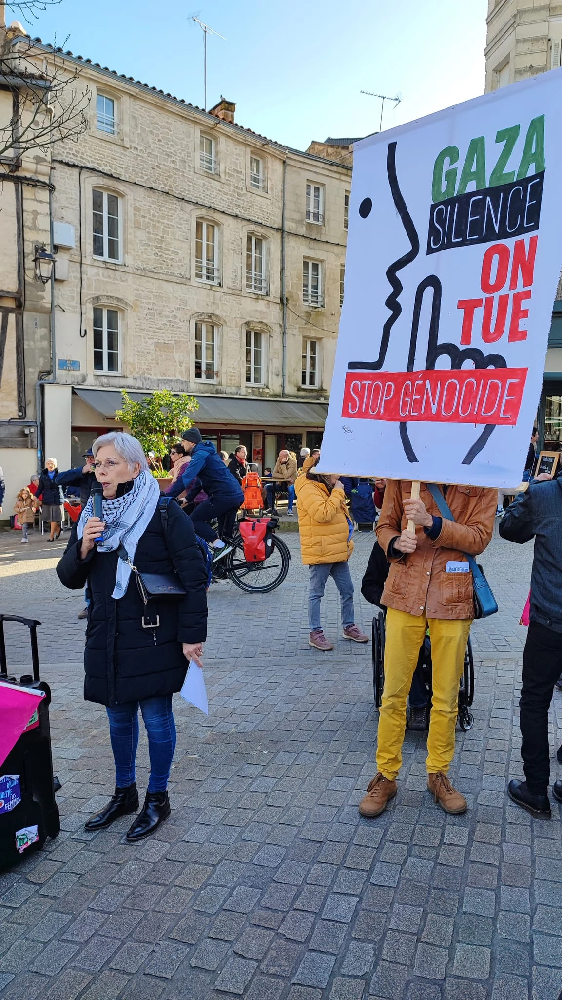
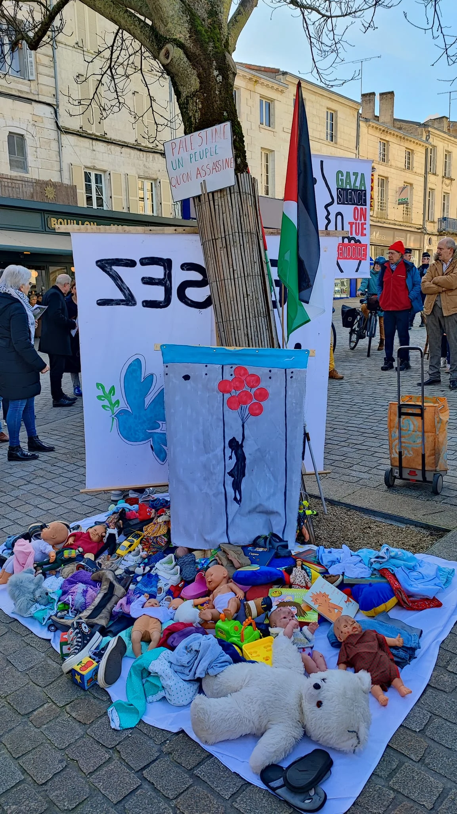

Publication d’archives
Netanyahou a ordonné à son armée une offensive sur Rafah, à la frontière avec l’Égypte, où se masse…
Date indiquée par Facebook · 18 février 2024
Texte conservé avec la publication
Netanyahou a ordonné à son armée une offensive sur Rafah, à la frontière avec l’Égypte, où se masse actuellement 1,4 million de Palestiniens, soit plus de la moitié de la population de Gaza. Celle-ci a commencé depuis plusieurs jours avec d’intenses bombardements qui font des milliers de victimes dont de très nombreux enfants. C'est pour symboliser ces petites victimes innocentes que chaussures, jouets, avaient été déposés au pied de l'arbre de la laïcité lors du rassemblement de ce samedi.
Il faut que cesse le génocide ! Que soit imposé un cessez-le-feu immédiat et permanent ainsi que la levée du blocus.
#GazaGenocide
#FreePalestine


Sources
Archive rouge · export Facebook · AR-0002-FB-01474
À lire aussi · 29 novembre : une déclaration commune PCF–OLP